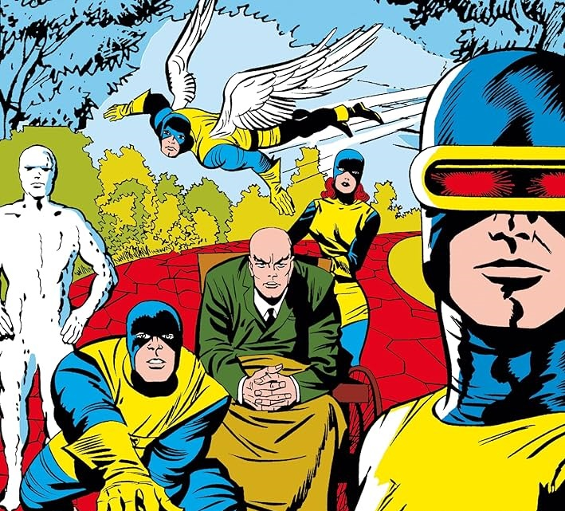
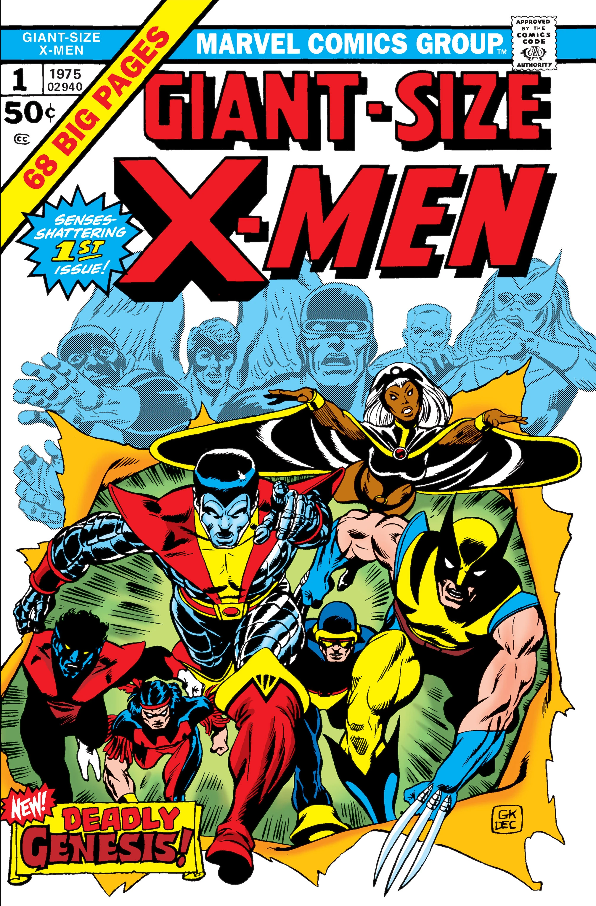
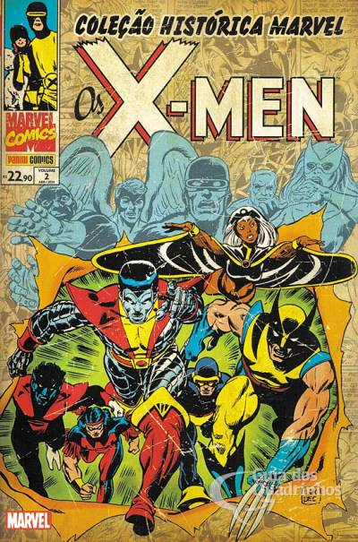
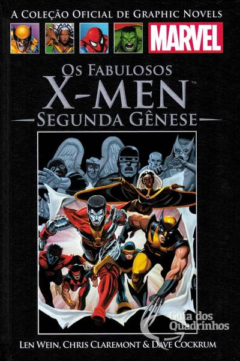
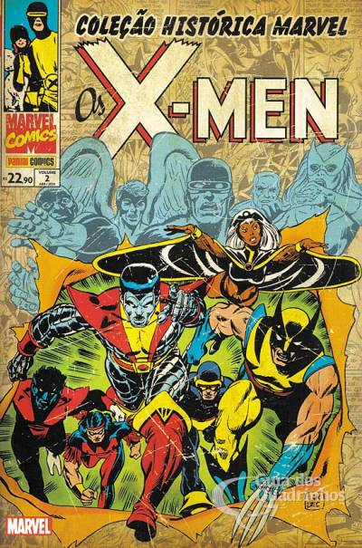
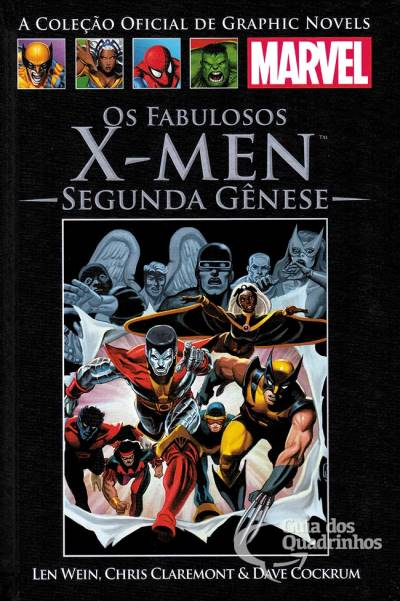

Ordem de leitura:
Primeira Classe:
Unncany X-men (1963) 01-66

X-men #01-66
Opcional: Leitura "datada", vale por curiosidade histórica.
Principais edições:
X-men #01: Estreia dos X-men
X-men #04-05: Magneto e Irmandade de Mutantes
X-men #12-13: Fanático
X-men #15-16: Sentinelas
X-men #20-21: Perda dos movimentos da perna do Xavier
X-men #56-65: Roy Thomas e Neal Adams(1969)
Do número #67 ao #93 a revista apenas republicavam histórias antigas.
X-men: A Segunda Gênese (1975) 94-108
X-men Giant Size #01
X-men #94-95: Conde Nefária e Morte de um X-man
X-men #96-97: Eric Escarlate
X-men #98-101: O surgimento da Fênix
X-men #102-103: Fanático e Black Tom Cassidy
X-men #104: Retorno do Magneto
X-men #105-104: Império Shi'ar
X-men #106: Lado Obscuro de Xavier
X-men #107-108: Império Shi'ar
Sugestão de publicações no Brasil:
| Edições Brasileiras: | Capítulos: |
| Coleção Histórica Marvel: X-men 02 (Panini) | Giant-Size X-Men #01 X-men #94-095 e X-men #104-108 |
| Fabulosos X-Men - Edição Definitiva n° 5 (Panini) | Giant-Size X-Men #01 X-men #094-110 + Histórias Extras |
| Marvel Salvat n° 34 X-men: A segunda Gênese (Salvat) | Giant-Size X-Men #01 X-men #94-103 |
| X-men Deluxe: A segunda Gênese (Panini) | Giant-Size X-Men #01 X-men #94-108 e X-men #110 |
| X-men Classic nº1-4 (Abril) | (nº1) Giant-Size X-Men #01 (nº2) X-men #94 (nº3) X-men #95 (nº4) X-men #96-97 |
| X-men Classic II nº1-4 (Abril) |
(IInº1) X-men #98-99 e #12-13 (IInº1) X-men #100-103 (IInº3) X-men #104-105 e #14 (IInº4) X-men #107-108 e #15-16 |
 



X-men: Magneto e Outras Aventuras: 109-128
X-men #109: Vindix Arma Alfa (DELUXE, DEFINITIVA)
X-men #110: (Edição Tapa Buraco)
X-men #111: Jogos Mentais ()
X-men #112-113: Magneto Triunfa
X-men #114-116: Terra Selvagem
X-men #117: Rei das Sombras
X-men #118-119: Japão
X-men #120-121: Tropa Alfa
X-men #122-124: Arcade
X-men #125-128: Saga de Proteus
A saga da Fênix Negra 129-138
X-men #129-138: Saga de Fênix Negra
Pós a saga da Fênix Negra 139-153
X-men #139-140: Wendigo e Tropa Alfa
X-men #141-142: Dias de um futuro esquecido
X-men #143: Kitty vs Demônio N'Garai
Os Vingadores v1 Anual 10 (1967)
X-men #144: Ciclope e Homem Coisa vs Desespero
X-men #145-147: Destino e Arcade
X-men #150: Eu, Magneto
X-men #151-152: Emma Frost e Tempestade
X-men #153: Um conto de Kitty Pryde
Saga da Ninhada: 154-167
X-men #154-158: Saga da Ninhada Parte 1
X-men #159: Dracula
X-men #160: Illyana e Belasco
Minisérie Magik: Tempestade e Illyana
X-men #161-166: Saga da Ninhada Parte 2
Marvel Graphic Novel (1982) #4
New Mutants (1983) #1-3
X-men #167: Saga da Ninhada Parte 3 Final
Uma nova Saga dos X-men Vol 1 e 2. 168-175
Deus Ama o Homem Mata
X-men #168-171: Murlocks
Wolverine(minissérie 1982) #1-4
X-men #172-175: Casamento
A Saga dos X-men Volume 03 (Opcional) 176-181
X-men #176: Ciclope e Madelyne
X-men #177-178: Irmandade de Mutantes
X-men 179 Caliban e Kitty
X-men #180: Kitty e Tempestade (Gancho para Guerra Secretas)
Guerras Secretas
filler - X-men #181: Ligação pós-Guerras Secretas
Saga dos X-men Volume 04 182-185
X-men #182: Vampira vs Shield
X-men #183: Colossus vs Fanático
Minisérie Kitty e WOLVERINE
X-men #184: Rachel Summers e Forge
X-men #185: Tempestade perde os poderes
Guerras Asgardianas Parte 1
X-Men/Alpha Flight (1985) n° 1
X-Men/Alpha Flight (1985) n° 2
OUTRAS 193-199
X-men #193 Vingança Passaro Trovejante
X-men #194 Nimrod
X-men #195 Quarteto Futuro e Murlocks
X-men #196 Ataque ao Xavier
X-men #197 Arcade
X-men #198 Tempestade Morte em Vida II
X-men #199: Rachel Fênix
Guerras Asgardianas Parte 2
New Mutants Special Edition (1985) n° 1/1985
X-Men Annual (1970) n° 9/
Julgamento do Magneto 200
X-men #200: Julgamento de Magneto (background guerras asgardianas)
OUTROS 201-209
X-men #201: Scott VS Ororo pela liderança
X-men 202-203 Rachel vs Beyonder
X-men 205 - Noturno Vs Arcade
X-men 205 - Wolverine VS Lady Letal
X-men 206 - X-men VS Irmandade
X-men 207-209 - Rachel Summers e Nimrod
Ascenção da Fênix
Avengers, The (1963) n° 263
Fantastic Four (1961) n° 286
X-Factor (1986) n° 1
Massacre dos Mutantes 210-213
Uncanny X-Men #210
X-Factor #9
Uncanny X-Men #211
New Mutants #46
X-Factor #10
Thor #373
Power Pack #27
Uncanny X-Men #212
Thor #374
X-Factor #11
Uncanny X-Men #213
Fabulosos X-men 214-222
Uncanny X-Men #214 Cristal e Maligna
Uncanny X-Men #215-216 Muralha e Supersabre
Uncanny X-Men #217-218 Cristal e Juggernalt
Uncanny X-Men #219 - Destrutor Retorna
Uncanny X-Men #220- Tempestade em busca de forge
Uncanny X-Men #221-222 - X-men revanche carrascos
Queda de Mutante 223-227
Uncanny X-Men #223-224 - Preparativo Queda de Mutantes: Tempestade Forge
Uncanny X-Men #225-227 Queda de Mutantes
(Opcional) X-Factor #18-26 - Direita e Apocalipse
(Opcional) New Mutants #59-61 - Direita e Animador
Fase Australia 228-234
Uncanny X-Men #228 - Cristal e Wolverine
Uncanny X-Men #229 -230 Ataque a base dos Carniçeiros
Uncanny X-Men #231 - Colossus e Illyana
Uncanny X-Men #232-234 Ninhada Retorna
Inferno 235-243
Uncanny X-Men #235-238 Preparativo Genosha
Uncanny X-Men #239 Prologo Inferno
X-Factor #036 Demônios em Manhattan
Uncanny X-Men #240 Carrascos
New mutants #071-72 N'astirh e S'ym no Limbo
Uncanny X-Men #241 Carrascos e Inferno
X-Factor #037 N'astirh e Madelyne
New mutants #073 Illyana VS S'ym
Uncanny X-Men #242 X-factor e X-men
X-Factor #038 Jean vs Madelyne
Uncanny X-Men #243 Busca por Sinistro
X-Factor #039 A batalha Final
Fabulosos X-men 244-270
Uncanny X-Men #244 Noite das Mulheres/Jubilei (Vol. 26 Saga)
(opcional) Uncanny X-Men #245 Homens no bar (Vol. 26 Saga)
Uncanny X-Men #246-247 Nimrod e Molde-Mestre (Vol. 27 Saga)
Uncanny X-Men #248 Babá e Fabricante de Orfãos (Vol. 27 Saga)
Uncanny X-Men #249 Zaladane e Terra Selvagem Parte 1 (Vol. 27 Saga)
Uncanny X-Men #250 Zaladane e Terra Selvagem Parte 2 (Vol. 28 Saga)
Uncanny X-Men #251-252 Carniceiros e Wolverine (Vol. 28 Saga)
Uncanny X-Men #253 Preparativos Ilha Muir (Vol. 28 Saga)
Uncanny X-Men #254 Nova formação Ilha Muir (Vol. 28 Saga)
Uncanny X-Men #255 Carniceiros na Ilha Muir (Vol. 29 Saga)
Uncanny X-Men #256-258 Pyslock lavagem cerebral (Vol. 29 Saga)
Uncanny X-Men #256-Colossus e Genosha (Vol. 29 Saga)
Uncanny X-Men #260 fã da Cristal (Vol. 29 Saga)
Uncanny X-Men #261 Psylock, Jubileu e Wolverine (Vol. 30 Saga)
Uncanny X-Men #262-263 Forge na Ilha Muir (Vol. 30 Saga)
Uncanny X-Men #264- Forge e X-factor (Vol. 30 Saga)
Uncanny X-Men #265-266 - Tempestade vs Rei das Sombras (Vol. 30 Saga)
Uncanny X-Men #267 Tempestade vs Rei das Sombras FINAL (Vol. 31 Saga)
Uncanny X-Men #268 Wolverine, Capitão e Víuva Negra(Vol. 31 Saga)
Uncanny X-Men #269 O retorno de Vampira (Vol. 31 Saga)
Fantastic Four Annual 23 (Vol. 31 Saga)
New Mutants Annual 6 (Vol. 31 Saga)
X-Factor Annual 5 (Vol. 32 Saga)
Uncanny X-Men Annual (1970) 14 (Vol. 32 Saga)
Uncanny X-Men #270 (Vol. 32 Saga)
New Mutants #95 (Vol. 32 Saga)
Programa de Extermínio 270-272
Uncanny X-Men, The (1963) n° 270
New Mutants, The (1983) n° 95
X-Factor (1986) n° 60
Uncanny X-Men, The (1963) n° 271
New Mutants, The (1983) n° 96
X-Factor (1986) n° 61
Uncanny X-Men, The (1963) n° 272
New Mutants, The (1983) n° 97
X-Factor (1986) n° 62
Resgate de Xavier 273-277
Uncanny X-Men, The (1963) n° 273-277
Sequestro Nathan Summers
X-Factor (1986) n° 66-68. (panini 74-75)
Saga da Ilha Muir 278-280 (abril 75-77)
Uncanny X-Men, The (1963) n° 278-279
X-Factor (1986) n° 69
Uncanny X-Men, The (1963) n° 280
X-Factor (1986) n° 70
Gênese Mutante
X-Men (1991) n° 1-3
Obs: a equipe azul fica em X-Men (1991) e a equipe dourada em Uncanny X-Men(1963)
Canção do Carrasco 294-296
Uncanny X-Men(1963) n°294
X-Factor (1986) n° 84
X-Force (1986) n° 16
X-Men (1991) n° 14
Uncanny X-Men(1963) n°295
X-Factor (1986) n° 85
X-Force (1986) n° 17
X-Men (1991) n° 15
Uncanny X-Men(1963) n°296
X-Factor (1986) n° 86
X-Force (1986) n° 18
X-Men (1991) n° 16
Atração Fatal
Uncanny X-Men(1963) n°303 - Morte Illyana (abril x-men 93)
X-Factor #92
X-Force #25
Uncanny X-Men #304
X-men #25
Wolverine #75
Excalibur #71
X-men e Vingadores: Laços de Sangue
Part I: Avengers (vol. 1) #368 (1993)
Part II: X-Men (vol. 1) #26 (1993)
Part III: Avengers West Coast #101 (1993)
Part IV: Uncanny X-Men #307 (1993)
Part V: Avengers (vol. 1) #369 (1993)
Aventuras de Ciclope e Fênix
X-Men (1991) n° 30
The Adventures of Cyclops And Phoenix #1-4 (1994)
Aliança Falange
Uncanny X-Men #316 - Nova Geração Parte 1
X-Men #26 - Nova Geração Parte 2
Uncanny X-Men #317 - Nova Geração Parte 3
X-Men #27 - Nova Geração Parte 4
Excalibur #82 - Sinais de vida Parte 1
X-Factor #106 - Sinais de vida Parte 2
X-Force #38 - Sinais de vida Parte 3
Wolverine #85 - Manobra Final Parte 1
Cable #16 - Manobra Final Parte 2
A Busca por Legião
Uncanny X-Men #319 - A Busca por Legiâo Parte 1
X-Factor #109 - A Busca por Legiâo Parte 2
Uncanny X-Men #320 - A Busca por Legiâo Parte 3
X-men #40 - A Busca por Legiâo Parte 4
Uncanny X-Men #321 - A Busca por Legiâo Parte 5
Cable #20 - A Busca por Legiâo Parte 6
X-men #40 - A Busca por Legiâo Parte 7
Era de Apocalipse
X-Men Chronicles #01
X-Men Chronicles #02
Tales From The Age of Apocalypse: Sinister Bloodlines #01
Tales From Age Apocalypse: By The Light #01
X-men Alpha #01
Generation Next #01
Astonishing X-Men #01
X-Calibre #01
Gambit And The X-Ternals #01
Weapon X #01
Amazing X-Men #01
Factor X #01
X-man #01
Amazing X-Men #02
Factor X #02
Weapon X #02
Gambit And The X-Ternals #02
X-Calibre #02
Astonishing X-Men #02
Generation Next #02
X-man #02
Astonishing X-Men #03
Factor X #03
Amazing X-Men #03
X-Calibre #03
Weapon X #03
Gambit And The X-Ternals #03
X-Universe #01/
Generation Next #03
X-man #03
Astonishing X-Men #04
Generation Next #04
X-Calibre #04
X-man #04
Factor X #04
Gambit And The X-Ternals #04
Amazing X-Men #04
Weapon X #04
X-Universe #02/
X-men Omega #01
X-men Prime #01
X-men Genesis
Massacre
Operação Tolerância Zero
X-men #65
Uncanny X-men #346
X-men #66
Wolverine #115
X-men #67
Wolverine #116
X-men #68
Wolverine #117
X-men #69
Wolverine #118
A busca por Xavier
Uncanny X-men #362
X-men #82
Uncanny X-men #363
X-men #83
Uncanny X-men #364
X-men #84
A guerra magnética
X-men #85
X-men The Magneto War #01
Uncanny X-men #366
X-men #86
Uncanny X-men #367
X-men #87
Magneto REX
Magneto REX #01-03
Saga dos Doze + Eras do Apocalipse
X-men #92-94
Uncanny X-men #372-374
The Astonishing X-men #01-03
Uncanny X-men #375
X-men #95
Wolverine #145
Uncanny X-men #376
X-man #59
Cable #73-75
X-men #96
Wolverine #146-147
Uncanny X-men #377
Uncanny X-Men Annual ‘99
Cable #76
X-men #97
Uncanny X-men #378 - Eras do Apocalipse
Cable #77 - Eras do Apocalipse
X-men #98 - Eras do Apocalipse
A busca por Ciclope
X-Men: Search For Cyclops #01-04
Amanhecer Violento
X-men #111
Uncanny X-men #392
X-men #112
Uncanny X-men #393
X-men #113
Anos 2000
Novos X-men de Grant Morrison
New X-Men #114 – #117
New X-men Annual #1 Widescreen
New X-men #118-154
Surpreendes X-men de Joss Whedon
Astonishing X-men #01-35
Vingadores a Queda + Dinastia M (2005)
Gênese Mortal (2006) + Ascenção e Queda do Império Shia'r
Complexo de Messias (2007)
Guerra Messiânica
X-men/Vingadores: Utopia
Necrosha
Segundo Advento
O cisma
Magneto: Atos de Terror
Vingadores vs X-men
Fabulosos e Novíssimos X-men
Fabulosos X-men
Novíssimos X-men
A batalha do Átomo
Chega de Humanos
Morte dos Mutantes
Inumanos vs X-men
| Encadernado: | Capítulos: |
| Fabulosos X-Men - Edição Definitiva n° 5 | Giant-Size X-Men #01
X-men #094-110 + Histórias Extras |
| Fabulosos X-Men - Edição Definitiva n° 6 | X-men #111-128 + Histórias Extras |
| Fabulosos X-Men - Edição Definitiva n° 7 | X-men #129-143 + Histórias Extras |
| Fabulosos X-Men - Edição Definitiva n° 8 | X-men #144-153 + Histórias Extras |
| Fabulosos X-Men - Edição Definitiva n° 9 | X-men #154-167 + Histórias Extras |
Wikipédia X-men
X-men: A Série Animada
Voltar ao topo